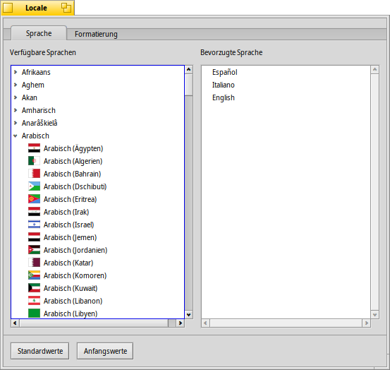
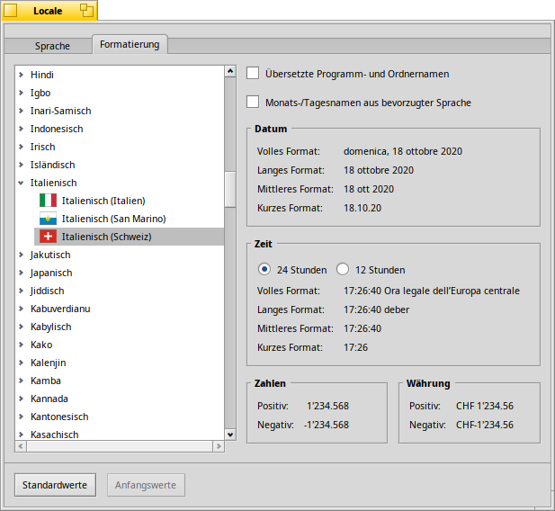

Sprache
Sprache
| Deskbar: | ||
| Ort: | /boot/system/preferences/Locale | |
| Einstellungen: | ~/config/settings/Locale settings |
Die Lokalisierung von Haiku beschränkt sich nicht auf das bloße Ersetzen von Texten mit deren Übersetzung. Auch komplexere Aufgaben wie die Formatierung von Zahlen, Zeit und Datum werden in den in diesem Fenster vorgenommenen Einstellungen erledigt.
 Sprache
Sprache
Haiku wurde bereits in dutzende Sprachen übersetzt, wobei einige dieser Übersetzungen allerdings noch nicht abgeschlossen sind. Daher lassen sich mehr als eine zur "Bevorzugten Sprache" erklären. Fehlen Texte in einer Übersetzung, werden sie durch Texte aus der nächsten bevorzugten Sprache ersetzt. Wenn alle Stricke reißen, wird der englische Originaltext eingefügt (selbst falls man das nicht explizit ausgewählt hat).
In diesem Beispiel wurde als bevorzugte Sprache Spanisch gewählt. Die erste Ersatzsprache ist italienisch, und falls der Text dort auch nicht vorhanden ist, kommt als Standard Englisch zum Zuge.
Wird auf der linken Seite eine Sprache aufgeklappt, erscheinen eventuell vorhandene Untereinträge für verschiedene Variationen oder Dialekte einer Sprache.
Formatierung
Der Reiter enthält Einstellungen für die Darstellung von Datum, Zeit, Zahlen und Währung, und zwar unabhängig von der eingestellten bevorzugten Sprache.
Ist man beispielsweise Spanier im italienisch sprechenden Teil der Schweiz, hätte man sein System wahrscheinlich am liebsten auf spanisch, aber Zahlen und Währung wie auf der Arbeit: schweizerisch/italienisch.
Wenn einem dann die spanischen Namen für Tage und Monate genehmer sind (zum Beispiel in der Spalte für das Änderungsdatum von Dateien), lässt sich dieses Zeit-spezifische Format mit der Auswahl ganz oben erreichen: .
Zugegeben, obiges Beispiel beschreibt nicht gerade eine übliche Situation, es zeigt allerdings wie flexibel dieses System ist.
Optionen
Der letzte Reiter bietet die Option . Man kann sie deaktivieren, falls man seine grafische Oberfläche zwar gern auf Deutsch hat, aber für die Namen von Einstellungsfenster, Anwendungen und Standard-Ordner doch das englische Original bevorzugt.
Änderungen werden sofort übernommen, momentan laufende Anwendungen können allerdings ein Schließen und erneutes Starten benötigen, damit die neuen Einstellungen angezeigt werden.
| Setzt alle Einstellungen auf die Standardwerte zurück. | ||
| setzt die Werte, die beim Start des Einstellungspanels aktiv waren. |